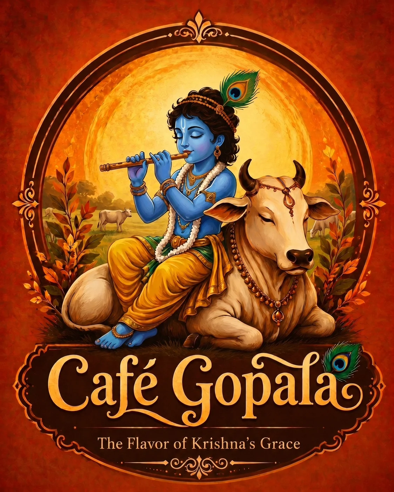

Chaat & Snacks
- Samosa (2 pcs)₹40
- Aloo Tikki Chaat₹70
- Pani Puri₹50
- Dahi Puri₹70
- Papdi Chaat₹70

Warm, homemade saatvik vegetarian food — pure vegetarian, with no onion and no garlic in every dish. Chaat and snacks, hearty mains with hot breads, and sweets with masala chai. Dine in, or order ahead and collect.
At Cafe Gopala, every dish is 100% vegetarian and strictly prepared without onion or garlic — no exceptions. We cook fresh daily with whole grains, seasonal vegetables, legumes, pure dairy, and aromatic spices like cumin, coriander, turmeric, and hing.
Saatvik food — in the mode of goodness — is pure, fresh, and nourishing. It supports a calm mind and healthy body, the way scripture and tradition teach us to honour what we eat.
Cafe Gopala began the way good things often do — around a kitchen, among ISKCON friends. The intention was simple, and still is: saatvik food for everyone, cooked the friendly way it is cooked at home.
We welcome everyone to dine in, take away, or order ahead online.
We are ISKCON devotees, in the line of the Brahma-Madhva-Gaudiya Sampradaya and guided by the teachings of Sri Chaitanya Mahaprabhu and Srila Prabhupada. What we serve is prasadam — food prepared with devotion and offered to Lord Krishna.
Prepared in strict harmony with Ahimsa & Satya
Every regular dish at Cafe Gopala is 100% vegetarian and prepared without onion or garlic. That means most of our menu is already suitable for Jain guests — including the chaat, the paneer dishes, the dals, the breads, and the chai.
For our Jain guests, we prepare dishes strictly free of all underground root vegetables — no potatoes, carrots, or radishes. Raw banana replaces potato in our samosas, tikkis, and cutlets; pumpkin, bottle gourd, and tomato-based gravies do the rest of the work.
Root-veg dishes and Jain-prep dishes receive separate handling in our kitchen to avoid cross-contact. Please tell our staff when you order so we can take extra care with your plate.
Craving a specific dish made Jain-style? We are happy to prepare custom dishes if you inform us in advance.
Whether you are planning a family gathering, hosting guests, or want a favourite from our menu made strictly root-free, just call us ahead or mention it while booking — our chefs will prepare it with care.
All our ghee, paneer, and milk is 100% pure vegetarian — no animal rennet or non-veg processing aids. Vegan alternatives are available on request for dairy-free guests.
On our menu you will find two marks:
In Jain tradition, harvesting root vegetables uproots the plant and destroys tiny living organisms in the soil. We respect this principle by keeping Jain-prep dishes completely free of potatoes, carrots, radishes, onion, and garlic.
Strictly grain-free prasadam, prepared on advance notice
Ekadashi is the eleventh day of each lunar fortnight — a day of fasting observed by many Vaishnavas. The rules are different from a Jain meal: grains, lentils, and regular salt are avoided, but root vegetables and dairy are welcome.
We prepare strictly grain-free Ekadashi prasadam on request — cooked without grains, lentils or beans, and with sendha namak (rock salt) in place of table salt, using sabudana, samak rice, kuttu, singhara, fresh fruit, and pure dairy.
Ekadashi falls twice each lunar month. The kitchen prepares fasting dishes on request — not as standing menu items.
Please tell us when you order, or a day ahead for a full fasting meal, so our chefs can prepare it separately with clean utensils.
On our menu you will find two fasting marks:
These are different rules:
A dish can follow one without the other, which is why they carry separate marks on the menu — a J mark does not mean the dish is also Ekadashi-friendly, and vice versa.